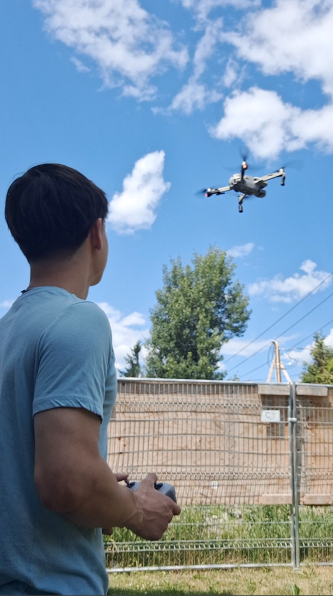

Pilote certifié Transports Canada
Opérations préparées avec rigueur, attention à la sécurité et respect du contexte de chaque site.
À propos
Vision Altitude réalise des captations photo et vidéo par drone pour les entreprises qui veulent présenter, documenter ou expliquer un projet. Chaque mandat est préparé selon le lieu, les objectifs et les livrables attendus.
Notre mission
Vision Altitude est spécialisée en photographie, vidéographie et documentation visuelle aérienne par drone. La mission est d’aider les entreprises à obtenir des images claires pour présenter un bâtiment, suivre un chantier ou documenter un site.
Nous travaillons avec des entreprises du Grand Montréal, de Montréal, Laval, Terrebonne, Mascouche, Repentigny et de la Rive-Nord qui veulent mieux présenter un chantier, un bâtiment, un terrain, une installation industrielle ou un projet commercial. Chaque captation est planifiée pour produire des images claires, pertinentes et faciles à utiliser.

Fondateur • Photographe et vidéaste aérien
Confiance
Chaque mandat commence par une compréhension du site et des objectifs. Le vol est préparé pour capter les bons angles, puis les fichiers sont triés et livrés dans des formats faciles à utiliser.
Opérations préparées avec rigueur, attention à la sécurité et respect du contexte de chaque site.
Photos et vidéos propres, stables et prêtes à servir dans vos communications.
Processus clair pour obtenir vos fichiers sans friction et avancer dans vos projets.
Communication simple avant, pendant et après le mandat.
Service mobile à Montréal, Laval, Terrebonne, Mascouche, Repentigny et sur la Rive-Nord.
Secteurs
Les services s’adressent aux entreprises en construction, immobilier, industriel et commercial. Les vues aériennes aident à documenter, vendre, expliquer ou promouvoir un projet en montrant l’emplacement, les accès et l’environnement du site.